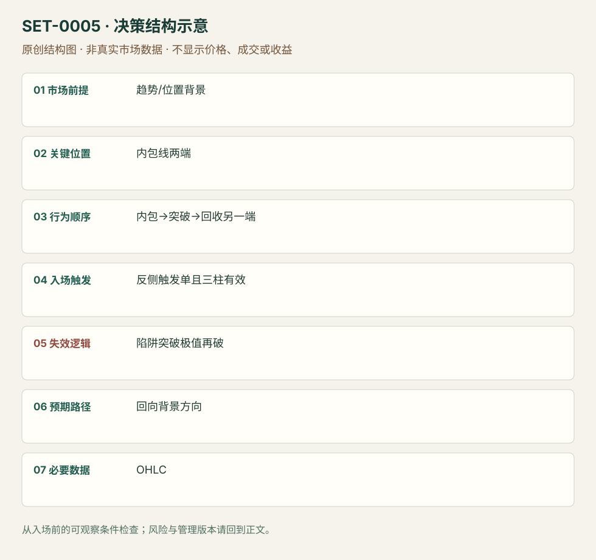

内包线突破失败陷阱
Hikkake · SET-0005 · reviewed · v1.0.0
盈利证据：not_established。审查范围与来源版本见第13节；未知字段保留缺失原因。
1. 名称与快速概览
先出现内包线，再向一侧突破；短窗口内越过内包线另一端才交易反向。这里等的是突破失败，不是看到内包线就猜方向。
记录口径：PA core；必要数据 OHLC。名称性质：来源术语或研究术语。reviewed 只表示本条规则与证据记录审查通过，盈利状态为 not_established。
2. 本质与行为假说
价格序列可核对；“被套突破者离场”是Galen的行为解释，不是持仓数据。三根有效期是该版本规则，不能忽略超期后又宣称严格满足。
3. 适用市场与环境
适合有方向背景、且短暂突破有参与理由的位置；拥挤小区间中的连续外包线容易两端触发。正文既有日线案例也有5分钟ES，不将日线持有期移入本库。
来源实用市场：ES期货5分钟日内案例、SPY、伦敦股票日线背景例。
Session：美股/ES现金参考段 09:30–16:00 America/New_York；收盘前平仓。期货夜盘单独建背景，不将其并入开盘区间。
跨市场：本版不主张已经验证的跨市场迁移；更换市场必须重定数据来源、流动性与session。
4. 出现前的观察清单
必要：严格内包关系；随后一柱高低共同向外移动。增强：背景趋势或拥挤区边缘。否决：外包柱同时破两端、已经超过三柱且仍按机械版本命名。
5. 形成过程与状态转换
母柱→内包柱→下一柱低高均更低（多头例）→内包柱高点被越过→管理；空头镜像。前三柱未触发即取消。
6. Entry trigger 与执行方式
Galen版多头挂内包柱高点买入触发单，空头挂低点卖出触发单；等待失败回收。作者允许主观延长窗口，但那是另一个版本，必须事前记录而非事后补理由。
7. Invalidation 与止损逻辑
源文补充案例采用突破柱极值外侧保护。反向重新穿越陷阱极值说明回收未持续。超大突破柱会扩大止损，不应仍把内包线窄幅当真实风险。
8. Exit、target 与 trade management
作者讨论停滞可保本离场或保留标准止损，并没有统一倍数。研究管理模块：使用当时已知拥挤区/趋势前高低；日内收盘前退出，延长持仓不能继承本条归类。
9. 常见 variations
多空镜像不另计；Modified Hikkake加入额外背景柱需独立研究，本版未计入。只等单根pinbar与完整Hikkake不是同一辨识序列。
10. 失败方式与不交易条件
正常亏损：合格失败突破后再反向穿越。未成立：少了先突破或超期。偏离：被两端触发仍重复追价。来源Example #4标题写Losing Bullish Trade，但正文是sell stop空头；按正文说明并保留此编辑不一致。
11. 与相近 setups 的区别
12. 图表与案例解读
已查看Example #3，ES 03-20，5分钟，图头21/2/2020；快速下跌后先有三个未触发的空头Hikkake，后出现多头Hikkake。箭头指突破柱，不是成交证明；显示钟点的时区未标注，不能等同美东。
- [VIS-000004] ES日内下跌后内包线陷阱与未触发案例；定位：Example #3: Intraday Hikkake Pattern，第4幅图。先分清未触发箭头与最终触发的水平虚线；作者胜例不证明所有陷阱有优势。 验证：chart_viewed。

本地原创示意（VIS-000062，非真实市场数据）：

小屏阅读可打开原尺寸示意图并缩放。

此图用于对照识别顺序与风险定义；不计入真实案例覆盖率。
视觉材料元数据与查看范围
- VIS-000004 · real_source_chart / structure_and_trigger / chart_viewed
品种：ES 03-20；日期：2020-02-21；周期：5分钟；时区：未知/不适用
图表时区未标注；作者实际成交未知 - VIS-000062 · synthetic_structure_diagram / illustration_only / generated_not_market_evidence
品种：未知/不适用；日期：未知/不适用；周期：未知/不适用；时区：未知/不适用
无真实品种、日期或价格：这是结构示意
13. 证据、分歧与未知项
两篇Galen材料属于一个来源族，不算独立佐证。规则和日内图完整，三柱有效期与可选主观延长存在版本差异；无充分盈利数据。
- [EVD-000006] Galen Woods，《Hikkake Trade Setup》，SRC-0007；定位：Hikkake Trading Rules、Example #3、Example #4。支持：内包→单侧突破→三柱内另一端触发；反例标题与交易方向有不一致
- [EVD-000007] Galen Woods，《4 Price Action Trading Strategies That Profit From Trapped Traders》，SRC-0008；定位：Strategy #1与Hikkake Trading Example。支持：可使用突破柱极值保护；停滞退出与保留止损是不同管理选择
审查边界：来源份数与独立核心核验分开；当前类别为 limited_single_family。正文中的概念、官方事实、衍生解说或同族资料只按其支持范围使用。
14. 可用于复盘的检查表
- ☐ 下单前的前提可核对：趋势/位置背景
- ☐ 事前标记位置：内包线两端
- ☐ 行为按顺序出现：内包→突破→回收另一端
- ☐ 实际触发符合选定版本：反侧触发单且三柱有效
- ☐ 事先写明本次否定条件：陷阱突破极值再破
- ☐ 目标/路径只用当时已知信息：回向背景方向
- ☐ 数据满足 OHLC；记录时间、点差、滑点、队列和未成交
- ☐ 记录截止平仓及规则偏离；正常亏损不事后改成“未成立”
15. 后续验证问题
固定机械三柱版与主观延长版分别登记；包含所有未触发及外包两端触发样本。按拥挤程度、突破柱大小和时段分层，计入触发单滑点。
双向相关导航
- SET-0013 趋势内双内包压缩首次释放 ii突破交易压缩后的顺向释放，本条必须先有外侧突破失败。
- SET-0001 前一交易区间突破失败后的开盘反转 前日范围失败使用session边界；本条依赖特定内包与短窗口序列。
- SET-0011 趋势末端最后旗形突破失败 Hikkake必有inside-bar和限定时序；本条没有该K线序列要求。
- SET-0017 逆趋势实体柱试探失败后的顺势入场 Hikkake要求inside起点及其后假突破，本条要求逆向大实体承诺且一柱期限。
- SET-0019 原始顺势信号止损后快速恢复的延迟入场 Hikkake不要求先前顺势模式已触发且其止损被扫。